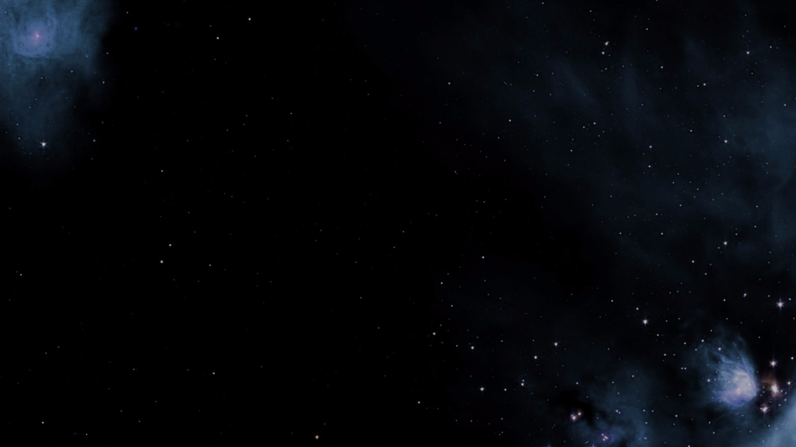

Welcome to our website! It was developed in conjunction with Montclair State University and funded from a grant by the National Science Foundation (NSF). Our mission is to provide a free, online course with supplemental resources and activities.
Space Weather Essentials is your gateway to understanding the dynamic relationship between the Sun and Earth. This online course is designed for students, educators, and space enthusiasts who want to explore how solar activity impacts our planet and modern technology.
Space weather events can impact GPS, radio communication, astronaut safety, and power grids. Learn how solar activity influences life on Earth and modern tech systems.
This self-paced course includes:
Printable online workbook
Expert video lectures
Interactive simulations
Vocabulary games
Real-time NASA & NOAA
tools
Slide decks, quizzes &
more!